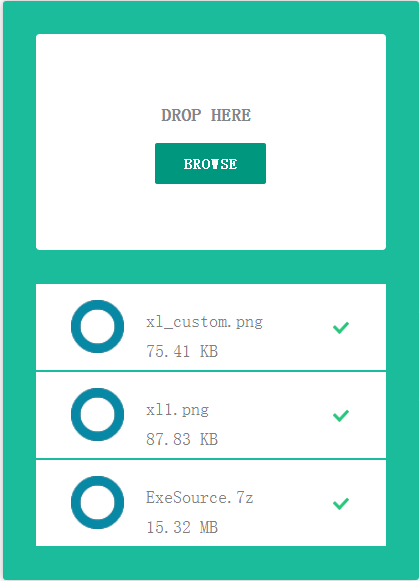
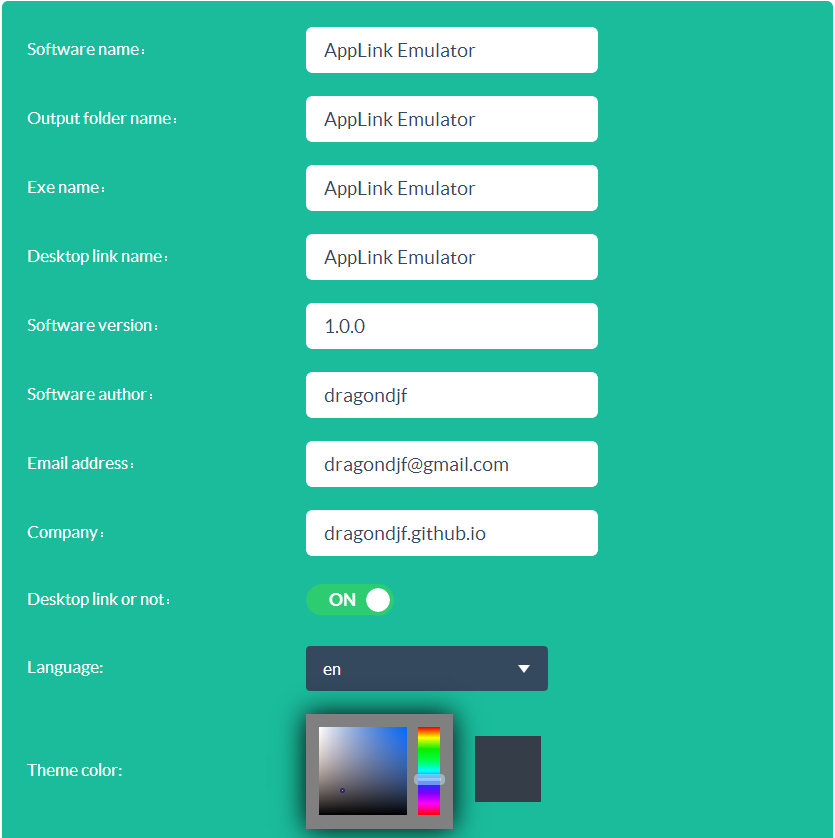
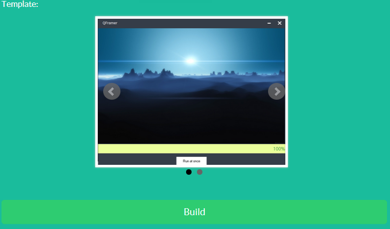
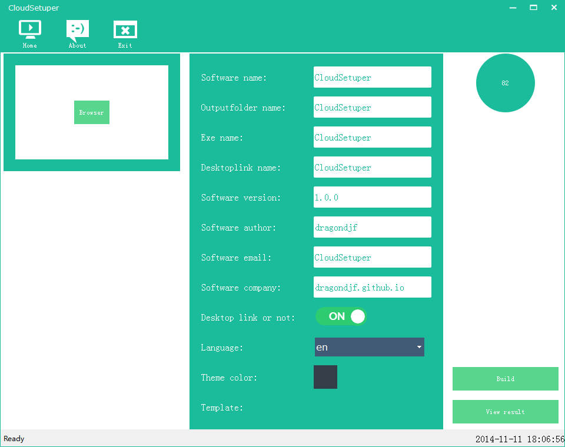

cloud setuper
Cloud setuper 是一款windows上的在线安装包制作工具类似 NSIS or Inno Setup. 利用它你的安装包程序将拥有更小的体积，更漂亮界面，更高的自定义。
您只需要简单的注册一个帐号即可无限制免费使用。
极简但富有内涵，原来安装包制作也可以如此美好。
环境支持
支持xp, win7, win8 和 win10
功能特性
1. 支持原生7z压缩包进行打包，保证安装包体积最小化；2. 支持自定义图片上传，你的图片有多炫，你的程序就有多炫；3. 支持安装目录自定义；4. 支持多语言选择；5. 支持生成桌面快捷方式；6. 支持安装界面主题背景自定义；7. 支持安装界面模板选择；8. 更多的特性.....第一步 上传文件


只需要上传一个7z格式的压缩包和几张介绍你程序的图片即可
7z格式压缩包： 务必使用单层目录压缩，多层目录安装正常，但是快捷方式和快速启动程序功能会出现异常。
图片： 上传的图片会在如下图片区域定时幻灯片播放
建议上传图片尺寸最好在
650 * 400左右
第二步 自定义
基本信息
Software name：软件的名称Output folder name：程序安装到指定的目录名称Exe name：程序可执行文件的名称Desktop link name：桌面快捷方式名称Software version：软件版本号Software author：软件作者Email address：邮箱地址Company：公司名称Desktop link or not：：是否生成桌面快捷方式Language:：：语言选择（国际化）选择模板
我们推出多种不同风格的打包模板，您可以选择您所喜欢的模板进行打包
点击
Build按钮即可一键生成安装程序。注意
默认情况下Software name、 Output folder name、Exe name、Desktop link name保持一致，你只需输入
Software name即可，系统会自动帮您填充其他字段；当然如下您想这些名字不一样，也可以自定义输入。第三步 下载
点击
Download按钮即可下载您的安装程序。其他注意事项
1.您的 7z 压缩工具最好使用最新的;
2.如果
Build失败或者是需要重新build,请F5刷新浏览器。
3. 您也可以下载CloudSetuper桌面版进行独立打包，一样的操作，一样的打包。

Demo 演示